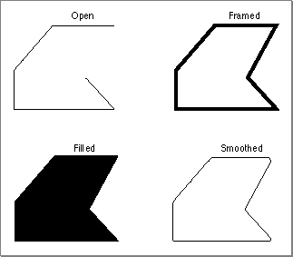
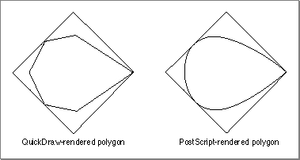

Legacy Document
Important: The information in this document is obsolete and should not be used for new development.
Important: The information in this document is obsolete and should not be used for new development.


Using Graphics Picture Comments
Graphics picture comments, listed in Table B-1 on page B-8, provide your application with the ability to render smoothed polygons (as described in the next section) and to rotate graphics (as described in "Rotating Graphics" on page B-31).In general, you cannot use one set of graphics picture comments (for instance, the polygon-drawing picture comments) with another (graphics rotation comments). When using these two types of comments, you should simply rotate the points of the polygon before drawing.
The graphics comments for drawing dashed lines and for rotating graphics require the use of the
PenModeprocedure (described in the chapter "QuickDraw Drawing" in this book) to set the pattern mode to a value of 23. Normally this value is undefined, but it is handled specially by PostScript printer drivers, which treat it like thesrcCopyBoolean transfer mode (described in the chapters "QuickDraw Drawing" and "Color QuickDraw"). All QuickDraw drivers ignore this pattern mode. Your application can use this pattern mode to draw objects in a picture and, if the picture is printed on a QuickDraw printer, these objects are not visible.Drawing Polygons
By using picture comments, you can draw high-resolution polygons on PostScript printing devices. PostScript supports four types of polygons: open, framed, filled, and smoothed. (QuickDraw supports all of these types except smoothed.)
Type Description Open A polygon whose endpoints do not join. This type of polygon cannot be filled. Framed A closed polygon that is not filled. Framed and filled polygons are exclusive to one another. Filled A closed polygon whose interior is entirely covered with a pattern. Smoothed A polygon (open, framed, or filled) whose edges have been rounded. Figure B-7 shows these four types of polygons.

To draw polygons, perform the following steps:
The
- Use the
PolyBeginpicture comment to alert the PostScript driver that you are drawing a polygon.- Optionally, you can use the
PolyClosepicture comment to use "closed" smoothing between the first and last vertices of the polygon.- Use the
PolySmoothpicture comment to tell the PostScript driver to draw a Bézier curve.- Use the
GetClipprocedure to save the current clipping region; then use theClipRectprocedure to hide your polygon's drawing commands from QuickDraw.- Draw your polygon. The PostScript driver renders it smoothly.
- Use the
SetClipprocedure to restore the previous clipping region.- Use the
PolyIgnorepicture comment to make the printer driver ignore the line-drawing commands for your QuickDraw representation of the polygon.- Draw your QuickDraw representation of the polygon.
- Use the
PolyEndpicture comment.
PolyBeginandPolyEndpicture comments surround the polygon description. Note that the printer driver draws the polygon at the location of the pen when it receives thePolyBeginpicture comment, so you must set the pen's location before using thePolyBeginpicture comment. For polygons that are smoothed, you must set the pen size to 0 after thePolyBeginpicture comment to prevent the unsmoothed polygon from being drawn on printers that do not support the polygon comments.All QuickDraw routines called between
PolyBeginandPolyEndthat are processed by the low-levelStdLineroutine are part of the polygon--that is, the endpoints of each of the lines become vertices of the polygons.You should use the
PolyClose,PolySmooth, andPolyIgnorepicture comments between thePolyBeginandPolyEndpicture comments.The
PolyClosecomment specifies that the printer driver should treat all vertices of the polygon in the same manner; in particular, this affects the shape of the smooth curve between the polygon's first and last vertices, which might otherwise be distinguishable as separate points. ThePolyClosecomment, however, does not automatically close the polygon as the PostScript operatorclosepathdoes.To render high-resolution B-splines when PostScript is available, use the
PolySmoothpicture comment, which directs the PostScript printer driver to interpret the polygon vertices as control nodes for a quadratic Bézier spline. PostScript has a direct facility for cubic B-splines, and the PostScript printer driver translates the quadratic B-spline nodes into the appropriate nodes for a cubic B-spline that will emulate the original quadratic. This allows you to use this PostScript feature without having to call PostScript routines directly.
When you use the
- Note
- PostScript Level 1 has some problems with very large polygons that have more than 1500 points. For this reason, you may want to avoid doubling the points on large smoothed polygons, even though a greater number of points might aid in making the polygon smoother.

PolySmoothpicture comment, pass aTPolyVerbHdlhandle, which is a handle to aTPolyVerbRecrecord, in thedataHandleparameter of thePicCommentprocedure. You use aTPolyVerbRecrecord to tell the printer driver to interpret the polygon vertices as control nodes for a quadratic Bézier spline. Here is how you should declare these as Pascal data structures in your application:
Type TPolyVerbHdl = ^TPolyVerbPtr; TPolyVerbPtr = ^TPolyVerbRec; TPolyVerbRec = PACKED RECORD f7,f6,f5,f4,f3: Boolean; {reserved; set to 0} fPolyClose: Boolean; {TRUE is same as PolyClose } { picture comment} fPolyFill: Boolean; {TRUE means fill polygon} fPolyframe: Boolean; {TRUE means frame polygon} END;Thef7,f6,f5,f4, andf3fields are reserved bits; you should set them to 0.Setting the
fPolyClosefield to 1 achieves the same result as thePolyClosepicture comment. ThePolyClosecomment specifies that the printer driver should treat all vertices of the polygon in the same manner; in particular, this affects the shape of the smooth curve between the polygon's first and last vertices, which might otherwise be distinguishable as separate points. ThePolyClosecomment does not automatically close the polygon as the PostScript operatorclosepathdoes.Set the
fPolyFillfield to 1 if you want the printer driver to fill the polygon, or set it to 0 if not.Set the
fPolyFramefield to 1 if you want the printer driver to frame the polygon, or set it to 0 if not.In Listing B-5, the polygon coordinates are defined through arrays of points, initialized using an application-defined procedure,
MyDefineVertices. The procedureMyDefineVerticesspecifies the points for two polygons. The array referenced through the parameterpdefines the points used for the PostScript representation of the polygon. The array referenced through the parameterqdefines the points used for the QuickDraw representation of the polygon.
PROCEDURE MyDefineVertices(VAR p,q: PointArrayPtr); CONST cx = 280; {x coordinate for center point} cy = 280; {y coordinate for center point} r0 = 200; {radius} kN = 4; {number of vertices for PostScript} kM = 6; {number of vertices for QuickDraw approximation} BEGIN {the array p^ contains the control points for the Bézier curve} SetPt(p^[0],cx + r0,cy); SetPt(p^[1],cx,cy + r0); SetPt(p^[2],cx - r0,cy); SetPt(p^[3],cx,cy - r0); p^[4] := p^[0]; {q^ contains the points for a QuickDraw approximation of the curve} q^[0] := p^[0]; SetPt(q^[1],cx,cy + round(0.7 * (p^[1].v - cy))); SetPt(q^[2],(p^[1].h + p^[2].h) DIV 2, (p^[1].v + p^[2].v) DIV 2); SetPt(q^[3],cx + round(0.8 * (p^[2].h - cx)),cy); SetPt(q^[4],q^[2].h,cy + cy - q^[2].v); SetPt(q^[5],q^[1].h,cy + cy - q^[1].v); q^[6] := q^[0]; END;Use thePolyIgnorecomment before drawing your QuickDraw version of the polygon; betweenPolyIgnoreandPolyEnd, drivers that support these two comments ignore all QuickDraw routines processed through the low-level procedureStdLine. You can enclose the application-defined procedureMyPolygonDemo, shown in Listing B-6, betweenOpenPictureandClosePicturecalls to create a picture containing both QuickDraw and PostScript representations of the polygon. Alternatively, you can callMyPolygonDemowhen drawing directly into a printing graphics port.
PROCEDURE MyPolygonDemo; VAR p, q: PointArrayPtr; aPolyVerbH: TPolyVerbHdl; i: Integer; clipRgn, polyRgn: RgnHandle; zeroRect: Rect; BEGIN p := PointArrayPtr(NewPtr(SizeOf(Point) * (kN + 1))); q := PointArrayPtr(NewPtr(SizeOf(Point) * (kM + 1))); IF (p = NIL) OR (q = NIL) THEN DoErr(kMemError); MyDefineVertices(p,q); PenNormal; {first show the standard QuickDraw polygon} MoveTo(p^[0].h,p^[0].v); FOR i := 1 TO kN DO LineTo(p^[i].h,p^[i].v); PenSize(2,2); {now show the same polygon "smoothed"} PenPat(gray); {first, the PostScript representation, clipped from QuickDraw} aPolyVerbH:= TPolyVerbHdl(NewHandle(SizeOf(TPolyVerbRec))); IF aPolyVerbH<> NIL THEN WITH aPolyRecH^^ DO BEGIN fPolyFrame := TRUE; fPolyFill := FALSE; fPolyClose := FALSE; {compare with the result for TRUE!} f3 := FALSE; f4 := FALSE; f5 := FALSE; f6 := FALSE; f7 := FALSE; END; MoveTo(p^[0].h,p^[0].v); PicComment(PolyBegin,0,NIL); {picComment(PolyClose,0,NIL); only if } { fPolyClose = TRUE, above!} PicComment(PolySmooth,SizeOf(TPolyVerbRec), Handle(aPolyVerbH)); clipRgn := NewRgn; GetClip(clipRgn); ClipRect(zeroRect); FOR i := 1 TO kN DO LineTo(p^[i].h,p^[i].v); {next, the QuickDraw approximation of the smoothed } { polygon, invisible for PostScript because of PolyIgnore} SetClip(clipRgn); PicComment(PolyIgnore,0,NIL); polyRgn := NewRgn; OpenRgn; MoveTo(q^[0].h,q^[0].v); FOR i := 1 TO kM DO LineTo(q^[i].h,q^[i].v); CloseRgn(polyRgn); FrameRgn(polyRgn); {or FillRgn, if fPolyFill above is TRUE} PicComment(PolyEnd,0,NIL); DisposeHandle(Handle(aPolyVerbH)); DisposeRgn(polyRgn); DisposePtr(Ptr(p)); DisposePtr(Ptr(q)); END;The two versions of the drawn polygon are shown in Figure B-8.Figure B-8 QuickDraw and PostScript polygons

Note that you do not need to open a region, collect the line segments in the region, and draw the polygon through theFrameRgnprocedure (described in the chapter "QuickDraw Drawing" in this book). This method is demonstrated in Listing B-6 only to prepare you for situations where you want to fill the polygon with a pattern. You cannot open a polygon and use theFillPolyprocedure (also described in the chapter "QuickDraw Drawing" in this book), because the PostScript driver "owns" the polygon concept at this point and captures--and ignores--all line drawing between thePolyIgnoreandPolyEndcomments. Regions do not interfere with polygons, however, and they can be used to paint or fill the polygonal shape.Rotating Graphics
You can rotate QuickDraw objects on PostScript printers. The printer driver rotates the entire PostScript coordinate space before drawing the objects, which then appear rotated. All objects that you want to rotate must be contained between theRotateBeginandRotateEndpicture comments.You specify the center of rotation with the
RotateCenterpicture comment. Unlike text rotation, where you pass theTextBeginpicture comment first and then theRotateCenterpicture comment, you must pass the offset (which is relative to the center of rotation) with theRotateCenterpicture comment before you use theRotateBeginpicture comment. When you specify theRotateCenterpicture comment in thekindparameter of thePicCommentprocedure, you also supply in thedataHandleparameter aTCenterHdlhandle, which is a handle to aTCenterRecrecord. You can use this record to specify the center of rotation for graphics or text. See "Rotating Text" beginning on page B-20 for a description of the fields of aTCenterRecrecord.When you specify the
RotateBeginpicture comment in thekindparameter of thePicCommentprocedure, you also supply in thedataHandleparameter aTRotationHdlhandle, which is a handle to aTRotationRecrecord. You use aTRotationRecrecord to specify the rotation of a graphic. Here's how you should declare these as Pascal data structures:
TYPE TRotationHdl = ^TRotationPtr; TRotationPtr = ^TRotationRec; TRotationRec = RECORD rFlip: Integer; {horizontal/vertical flipping} rAngle: Integer; {0..360 clockwise rotation in } { integer format} rAngleFixed: Fixed; {0..360 clockwise rotation in } { fixed-number format} END;You use therFlipfield to specify whether to flip the graphic horizontally or vertically in addition to rotating it. Here are the possible values for this field:
Value Description 0 No coordinate flip 1 Horizontal coordinate flip 2 Vertical coordinate flip You supply the
rAngleFixedfield with a fixed-point number to specify the number of degrees by which the printer driver should rotate the graphic.You can provide the degrees of rotation both as an integer (in the
rAnglefield) and as a fixed-point number (in therAngleFixedfield). You should always specify the rotation in both fields, even for drivers that support only integral rotation.Once you set up the rotation with the
RotateCenterandRotateBeginpicture comments, you draw the graphics objects you want to rotate. Before drawing the objects, use thePenModeprocedure to set the pattern mode to a value of 23, which represents a special pattern mode for PostScript printer drivers. You should draw the QuickDraw image, using theCopyBitsprocedure, inside its own pair ofPostScriptBeginandPostScriptEndcomments so that the QuickDraw representation will not show up on PostScript devices. (You should also use thePrGeneralprocedure with thegetRslDataOpopcode, described in the chapter "Printing Manager" in this book, to determine and use the maximum printer resolution.)In Listing B-7, the application-defined procedure
MyRotateDemorotates the same image for both QuickDraw and PostScript printers.Listing B-7 Using picture comments to rotate graphics
PROCEDURE MyRotateDemo; CONST angle = 30; VAR spinRect: Rect; delta: Point; BEGIN SetRect(spinRect,100,100,300,200); WITH spinRect DO SetPt(delta,(right - left) DIV 2, (bottom - top) DIV 2); PenSize(2,2); PenPat(ltGray); FrameRect(spinRect); {show the unrotated square} PenNormal; MyPSRotatedRect(spinRect,delta,angle); {QuickDraw equivalent of the rotated object, hidden from the PostScript } { driver because of PostScriptBegin and PostScriptEnd} PicComment(PostScriptBegin, 0, NIL); MyQDRotatedRect(spinRect, delta, angle); PicComment(PostScriptEnd, 0, NIL); END;The application-defined procedureMyQDRotatedRectrotates the four points of the rectangle by an angle around the center and draws the rotated rectangle. To include this QuickDraw representation of the rotated objects (in case theRotateCenterandRotateBeginpicture comments are not supported), the code in Listing B-7 assumes that only PostScript drivers implement these comments. The only way to hide from the driver the application-defined procedure that provides a QuickDraw representation of the rotated objects is to surround it byPostScriptBeginandPostScriptEndcomments.To hide from QuickDraw the graphics rotation for a PostScript printer, Listing B-8 uses pattern mode 23.
Listing B-8 Using the
RotateCenter,RotateBegin, andRotateEndpicture comments
PROCEDURE MyPSRotatedRect(r: Rect; offset: Point; angle: Integer); {does the rectangle rotation for the PostScript LaserWriter driver} {uses the RotateCenter, RotateBegin, and RotateEnd picture comments, } { and the "magic" pattern mode 23 to hide the drawing from QuickDraw} CONST magicPen = 23; VAR rInfo: TRotationHdl; rCenter: TCenterHdl; oldPenMode: Integer; BEGIN rInfo := TRotationHdl(NewHandle(SizeOf(TRotationRec))); rCenter := TCenterHdl(NewHandle(SizeOf(TCenterRec))); IF (rInfo = NIL) OR (rCenter = NIL) THEN DebugStr('NewHandle failed'); WITH rInfo^^ DO BEGIN rFlip := 0; rAngle := - angle; rAngleFixed := BitShift(LongInt(rAngle),16); END; WITH rCenter^^ DO BEGIN x := Long2Fix(offset.h); y := Long2Fix(offset.v); END; MoveTo(r.left,r.top); MyFlushGrafPortState; {see Listing B-1 on page B-10} PicComment(RotateCenter,SizeOf(TCenterRec),Handle(rCenter)); PicComment(RotateBegin,SizeOf(TRotationRec),Handle(rInfo)); oldPenMode := thePort^.pnMode; PenMode(magicPen); FrameRect(r); PenMode(oldPenMode); PicComment(RotateEnd,0,NIL); DisposeHandle(Handle(rInfo)); DisposeHandle(Handle(rCenter)); END;